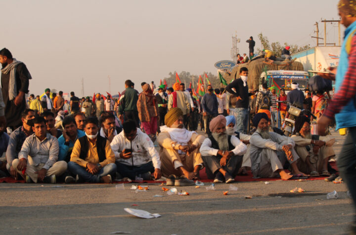
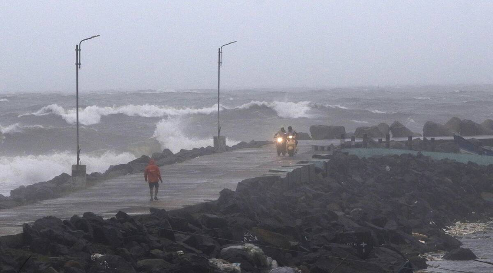
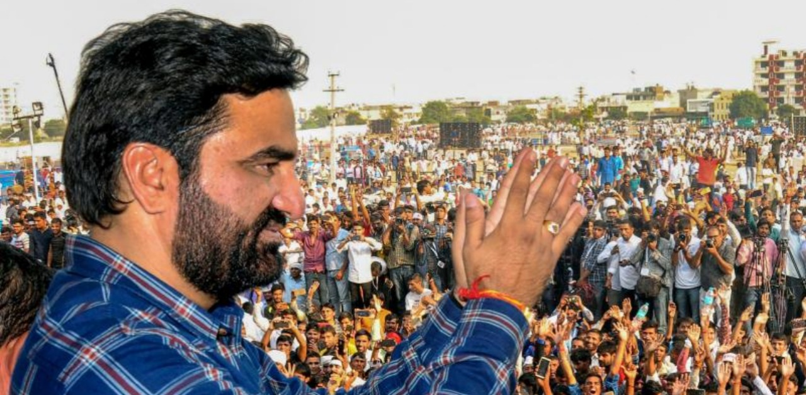

Stalemate continues over fresh talks offer, farmers vow to make protests a pan-India movement
NEW DELHI: As stalemate over offer of fresh round of talks with protesting farmers continued, the All India Kisan Sangharsh Coordination Committee (AIKSCC) – an umbrella body of around 400 farm organizations from across the country – on Monday stepped up efforts to mobilize farmers from different states in support of Punjab’s farmers’ Union.
India looking to be self-reliant in development, production of vaccine against Covid-19
A total of 10 vaccine candidates have been supported by Department of Biotechnology so far at both academia and industry and as on date, five vaccine candidates are in the human trials stage.
After Cyclone Nivar, another storm likely to affect Tamil Nadu: IMD
TAMIL NADU: Less than a week after battered Tamil Nadu, another storm is expected to affect the southern state,Last week, "very severe cyclonic storm" Nivar had hit Tamil Nadu. While there were no reports of loss of life, about 2.5 lakh people were housed in cyclone shelters in the state as part of safety measures.
MiG-29K crash: Navy's search for missing pilot continues
MUMBAI:Indian Navy's operation to locate the second pilot of the MiG-29K trainer aircraft which ditched off Goa on November 26 continued with extensive deployment of ships and aircraft, a Naval spokesperson said on Monday.
Will reconsider RLP's support to NDA if new farm laws not withdrawn: Beniwal
JAIPUR:MP Hanuman Beniwal, an alliance partner of NDA, on Monday said he will have to reconsider his party's support to the Centre if the new agricultural reform laws are not withdrawn.
China to build a major dam on Brahmaputra river in Tibet: Report
China will build a major hydropower project on Brahmaputra river in Tibet and a proposal for this has been clearly put forward in the 14th Five-Year Plan to be implemented from next year, the official media on Sunday quoted the head of a Chinese company tasked to build the dam as saying.
Supreme Court orders Centre, States to submit affidavits on resumption of anganwadi services
The Supreme Court has directed the Centre and the States to submit detailed affidavits on the implementation of a November 11 notification to immediately resume anganwadi services and distribution of supplementary nutrition to pregnant women, children and lactating mothers outside COVID-19 containment zones.
A three-judge Bench led by Justice Ashok Bhushan has passed the order after senior advocate Colin Gonsalves, appearing for Maharashtra-based activist Dipika Jagatram Sahani, complained that neither food nor education has been provided for children as young as six years since the anganwadis continue to remain closed due to the pandemic.
The Centre, represented by Additional Solicitor General Aishwarya Bhati, submitted an affidavit containing the guidelines issued by the Ministry of Women and Child Development on November 11. The guidelines covered the conduct of anganwadis outside containment zones in line with the COVID-19 health and safety protocol.
BRICS media wrestle with disinformation challenge in COVID-19 fight
Representatives of media organisations from BRICS (Brazil, Russia, India, China, and South Africa) on Monday called for the five nations to work together to jointly combat the “virus of disinformation” in the pandemic era.
Cross-border terror biggest challenge for SCO region: Venkaiah Naidu
Cross-border terrorism is the biggest challenge for countries belonging to the Shanghai Cooperation Organisation (SCO), said Vice President Venkaiah Naidu while chairing a meeting of the SCO Heads of Government, comprising India, Russia, China, Pakistan and four Central Asian states. Without identifying Pakistan, he stated that India was concerned about state-sponsored terrorism. He spoke of the need for trade partners to be “trustworthy and transparent” and compliant with global rules, in criticism seemingly aimed at China’s trade practices.
Every polling booth in Kashmir is sensitive, says SEC
All the district constituencies witnessing polls in Kashmir on December 1 have been declared “sensitive”, State Election Commissioner (SEC) K.K. Sharma said on Monday.
Microsoft Teams will stop working on Internet Explorer 11 from today
The company is also ending support for the Microsoft Edge Legacy desktop app on March 9, 2021 as it has upgraded most of its customers to the new Microsoft Edge browse.